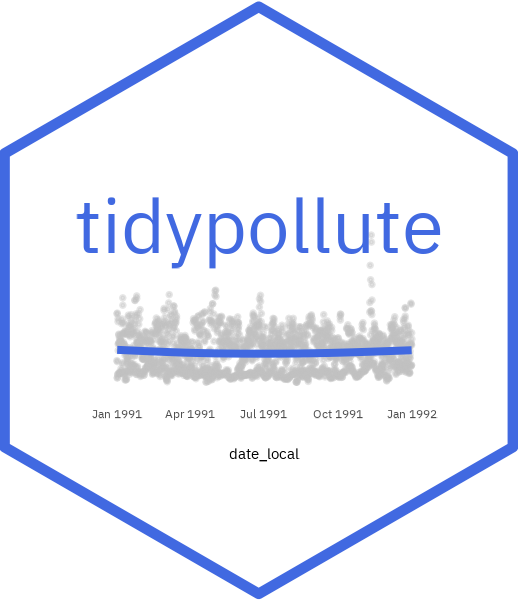

tidypollute, Meet, `tidycensus`
Dr. Nelson Roque
04_tidycensus.RmdGetting Started with tidypollute and
tidycensus
Goals of this Notebook
This notebook demonstrates how to download and stack
EPA AirData files for 2023-2024 focusing on
Ozone (44201) data, and merge with
tidycensus information.
The simplest request retrieves EPA AirData for a specific analyte (pollutant) over a given time range (e.g., download daily ozone (44201) data for 1991-1992).
library(tidypollute)
ozone <- get_epa_airdata(analyte = "44201", start_year = 2023, end_year = 2024, freq = "daily")##
## Preparing to download:
## Analyte: 44201
## Years: 2023 to 2024
## Number of files: 2
## Freq of data: daily
## Output directory: data/## Proceeding with download...## Using cached ZIP for https://aqs.epa.gov/aqsweb/airdata/daily_44201_2024.zip## Using cached CSVs for https://aqs.epa.gov/aqsweb/airdata/daily_44201_2024.zip## Rows: 239414 Columns: 29
## ── Column specification ────────────────────────────────────────────────────────
## Delimiter: ","
## chr (17): State Code, County Code, Site Num, Datum, Parameter Name, Sample ...
## dbl (10): Parameter Code, POC, Latitude, Longitude, Observation Count, Obse...
## date (2): Date Local, Date of Last Change
##
## ℹ Use `spec()` to retrieve the full column specification for this data.
## ℹ Specify the column types or set `show_col_types = FALSE` to quiet this message.
## Using cached ZIP for https://aqs.epa.gov/aqsweb/airdata/daily_44201_2023.zip
##
## Using cached CSVs for https://aqs.epa.gov/aqsweb/airdata/daily_44201_2023.zip
##
## Rows: 388238 Columns: 29
## ── Column specification ────────────────────────────────────────────────────────
## Delimiter: ","
## chr (17): State Code, County Code, Site Num, Datum, Parameter Name, Sample ...
## dbl (10): Parameter Code, POC, Latitude, Longitude, Observation Count, Obse...
## date (2): Date Local, Date of Last Change
##
## ℹ Use `spec()` to retrieve the full column specification for this data.
## ℹ Specify the column types or set `show_col_types = FALSE` to quiet this message.
##
## Download complete!## Linking to GEOS 3.11.0, GDAL 3.5.3, PROJ 9.1.0; sf_use_s2() is TRUE##
## Attaching package: 'dplyr'## The following objects are masked from 'package:stats':
##
## filter, lag## The following objects are masked from 'package:base':
##
## intersect, setdiff, setequal, union
# Get Census tract demographics (e.g., median income, race)
census_data <- get_acs(
geography = "tract",
variables = c(median_income = "B19013_001"),
state = "PA", # Adjust for your state
year = 2020,
geometry = TRUE
)## Getting data from the 2016-2020 5-year ACS## Downloading feature geometry from the Census website. To cache shapefiles for use in future sessions, set `options(tigris_use_cache = TRUE)`.## | | | 0% | |= | 1% | |= | 2% | |== | 3% | |=== | 4% | |==== | 5% | |==== | 6% | |===== | 7% | |===== | 8% | |====== | 9% | |======= | 9% | |======= | 10% | |======== | 11% | |======== | 12% | |========= | 13% | |========== | 14% | |=========== | 15% | |=========== | 16% | |============ | 17% | |============ | 18% | |============= | 19% | |============== | 19% | |============== | 20% | |=============== | 21% | |=============== | 22% | |================ | 23% | |================= | 24% | |================== | 25% | |================== | 26% | |=================== | 27% | |=================== | 28% | |==================== | 29% | |===================== | 30% | |====================== | 31% | |====================== | 32% | |======================= | 33% | |======================== | 34% | |======================== | 35% | |========================= | 35% | |========================= | 36% | |========================== | 37% | |=========================== | 38% | |=========================== | 39% | |============================ | 40% | |============================ | 41% | |============================= | 41% | |============================== | 42% | |============================== | 43% | |=============================== | 44% | |=============================== | 45% | |================================ | 46% | |================================= | 46% | |================================= | 47% | |================================== | 48% | |================================== | 49% | |=================================== | 50% | |==================================== | 51% | |==================================== | 52% | |===================================== | 52% | |===================================== | 53% | |====================================== | 55% | |======================================= | 56% | |======================================== | 57% | |========================================= | 58% | |========================================= | 59% | |========================================== | 60% | |=========================================== | 61% | |=========================================== | 62% | |============================================ | 63% | |============================================= | 64% | |============================================== | 65% | |============================================== | 66% | |=============================================== | 67% | |================================================ | 68% | |================================================= | 69% | |================================================= | 70% | |================================================== | 71% | |================================================== | 72% | |=================================================== | 73% | |=================================================== | 74% | |==================================================== | 74% | |===================================================== | 75% | |===================================================== | 76% | |====================================================== | 77% | |====================================================== | 78% | |======================================================= | 79% | |======================================================== | 80% | |========================================================= | 82% | |========================================================== | 83% | |=========================================================== | 84% | |=========================================================== | 85% | |============================================================ | 85% | |============================================================ | 86% | |============================================================= | 87% | |============================================================== | 88% | |============================================================== | 89% | |=============================================================== | 90% | |=============================================================== | 91% | |================================================================ | 91% | |================================================================= | 92% | |================================================================= | 93% | |================================================================== | 94% | |================================================================== | 95% | |=================================================================== | 96% | |==================================================================== | 97% | |===================================================================== | 98% | |===================================================================== | 99% | |======================================================================| 100%
# Convert EPA data to spatial format
epa_sf <- st_as_sf(ozone, coords = c("longitude", "latitude"), crs = 4326)
# Ensure Census data has the same CRS as epa_sf
census_data_t <- st_transform(census_data, st_crs(epa_sf)) # Transform to match EPA data
# Perform spatial join
epa_census <- st_join(epa_sf, census_data_t) %>%
filter(variable == "median_income") %>%
janitor::clean_names()
library(ggplot2)
# does income predict pollution more in some parts of PA than others? ----
agg_data = epa_census %>% mutate(
est_cut = cut(
estimate,
breaks = c(0, 20000, 40000, 60000, 80000, 100000, Inf),
labels = c("Low", "Low-Mid", "Mid", "Mid-High", "High", "Very High")
)
) %>%
mutate(year = as.factor(lubridate::year(date_local))) %>%
group_by(geoid, year, est_cut) %>%
summarize(mean_pollution = mean(arithmetic_mean, na.rm = TRUE))## `summarise()` has grouped output by 'geoid', 'year'. You can override using the
## `.groups` argument.
ggplot(agg_data, aes(x = year, y = mean_pollution,
color = est_cut, group = geoid)) +
geom_point() +
geom_line()+
theme_minimal() +
labs(title = "Ozone Pollution Trends, by Income Bracket, in Pennsylvania",
y = "Mean Ozone Levels (ppm)", x = "Year") +
theme(legend.position = "none") +
facet_grid(.~est_cut)Summary
This notebook provides a simple workflow for
retrieving EPA AirData and merge with Census data using
tidypollute and tidycensus.
You can:
✅ Retrieve and filter dataset links (to zip
files).
✅ Download specific pollutant data (e.g., Ozone,
Wind).
✅ Stack and process the downloaded files.
✅ Scales up to download all available EPA AirData.
For more details, check out tidypollute
documentation.